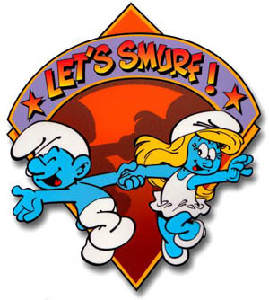

Por que os smurfs não morreram, nem eram frutos dos chás de cogumelo!

Os Smurfs (em Portugal, estrunfes), ou Les Schtroumpfs em franc�s, s�o personagens criados pelo ilustrador belga Peyo. Apareceram pela primeira vez em 1958, na tira Johan et Pirlouit, publicada na revista em quadrinhos belga Spirou. No Brasil, s�o conhecidos principalmente gra�as a um desenho animado produzido pela Hanna-Barbera Productions e ve�culado pela Rede Globo de Televis�o na d�cada de 1980. S�o pequenas criaturas azuis, semelhantes a duendes, que vivem em casinhas em forma de cogumelo, em uma vila escondida no meio da floresta. S�o governados pelo s�bio "Papai Smurf", que tem um gorrinho vermelho, ao inv�s do popular gorrinho branco dos demais smurfs. A �nica personagem feminina � a loira Smurfete (Estrunfina). Outros personagens marcantes s�o o Eug�nio, um sabe-tudo e puxa-saco do Papai Smurf e o Ranzinza, mal-humorado e pessimista. Nas imedia��es da vila dos smurfs, vive o feudal Gargamel (Gasganete) e seu gato Cruel (Azazel). O feiticeiro persegue os Smurfs, pois precisa deles como ingrediente em uma f�rmula para obter ouro. Retirado de "http://pt.wikipedia.org/wiki/Os_Smurfs"